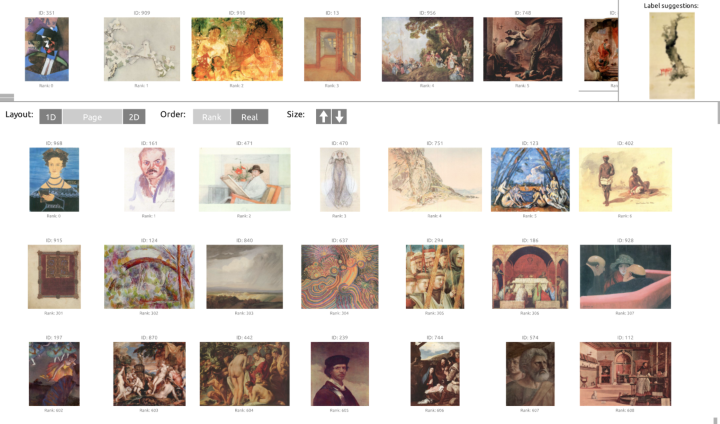

Criteria Sliders Learning Continuous Database Criteria via Interactive Ranking
British Machine Vision Conference (BMVC) 2017 (Spotlight)

Abstract
Large databases are often organized by hand-labeled metadata—or criteria—which are expensive to collect. We can use unsupervised learning to model database variation, but these models are often high dimensional, complex to parameterize, or require expert knowledge. We learn low-dimensional continuous criteria via interactive ranking, so that the novice user need only describe the relative ordering of examples. This is formed as semi-supervised label propagation in which we maximize the information gained from a limited number of examples. Further, we actively suggest data points to the user to rank in a more informative way than existing work. Our efficient approach allows users to interactively organize thousands of data points along 1D and 2D continuous sliders. We experiment with databases of imagery and geometry to demonstrate that our tool is useful for quickly assessing and organizing the content of large databases.
Video
Citation
@inproceedings{Tompkin:2017:BMVC,
author = {James Tompkin and Kwang In Kim and Hanspeter Pfister and Christian Theobalt},
title = {Criteria Sliders: Learning Continuous Database Criteria via Interactive Ranking},
booktitle = {British Machine Vision Conference (BMVC)},
month = sept,
year = {2017},
}This work previously appeared on arXiv and as a Max Planck Institute Tech Report (MPI-I-2015-4-002).
Acknowledgements
We thank Qi-Xing Huang, Leonid Pishchulin, Thomas Helten, and all of our study participants, particularly Atsunobu Kotani, Frances Chen, Gary Chien, Numair Khan, and Eleanor Tursman. Kwang In Kim thanks EPSRC EP/M00533X/2; James Tompkin and Hanspeter Pfister thank the DARPA Memex program.